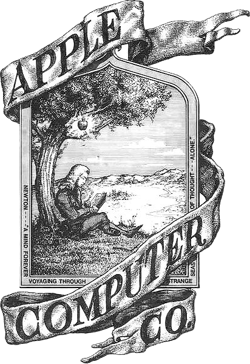

A HISTÓRIA DA LOGO DA APPLE
A logo da Apple é famosa por estampar diversos produtos da companhia, mas poucas pessoas sabem por que o desenho da maçã atrás do iPhone (iOS) tem uma mordida, mas o mistério finalmente foi revelado. Na verdade, a explicação é bastante simples: falta um pedaço no desenho da Apple para evitar que usuários confundam a maçã com uma cereja.
O PRIMEIRO LOGO DA APPLE
O primeiro logotipo da Apple foi criado em 1976 por Ronald Wayne, que é considerado um dos fundadores da Apple. Esse logotipo representa a ideia de Isaac Newton descobrindo a gravidade quando uma maçã caiu em sua cabeça. Como podemos ver, esse logotipo não é muito simples de entender e carece de clareza e simplicidade. Além disso, Steve Jobs não gostava desse logotipo, o que o levou a ser substituído nos meses seguintes.
Surgimento da nova logo da apple
O americano Rob Janoff, um designer gráfico de logotipos e identidades corporativas, foi quem desenhou a maçã como a conhecemos. Várias teorias surgiram no imaginário popular sobre qual teria sido a inspiração para o design: de histórias relacionadas ao mito de Adão e Eva a cientistas que revolucionaram o pensamento científico, como Isaac Newton e Alan Turing. Veja, a seguir, os detalhes que fizeram Janoff chegar ao resultado final e confira como a logo da Apple mudou ao longo dos anos.
O novo logotipo reflete a filosofia da Apple de simplicidade e sofisticação, características fundamentais na experiência do usuário de seus produtos. Além disso, a versão branca do logo tem sido amplamente utilizada em campanhas sazonais e materiais promocionais da empresa
A escolha da Apple por um design minimalista e plano no novo logotipo reflete sua estratégia de branding voltada para a clareza e a atemporalidade. O formato simples facilita a aplicação em diferentes plataformas, desde embalagens de produtos até campanhas digitais e materiais promocionais. A versão branca do logo, em especial, tem sido amplamente utilizada em ações sazonais, como promoções de fim de ano e eventos especiais, garantindo uma identidade visual limpa e sofisticada. Essa abordagem reforça a conexão emocional dos consumidores com a marca, transmitindo a ideia de inovação, exclusividade e elegância, características que a Apple busca associar a seus produtos